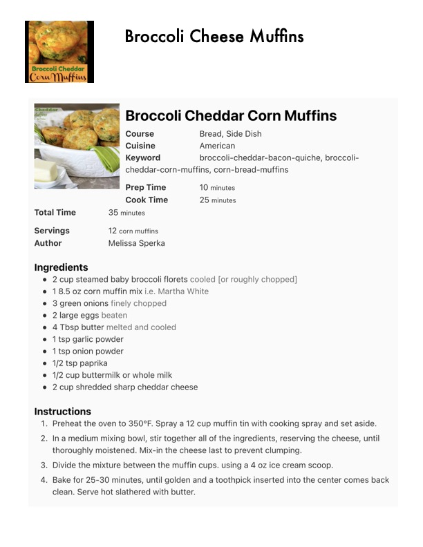

Broccoli Cheese Muffins

Original cookbook page 142
Ingredients
- 2 cup steamed baby broccoli florets cooled [or roughly chopped]
- 1 8.5 oz corn muffin mix i.e. Martha White
- 3 green onions finely chopped
- 2 large eggs beaten
- 4 Tbsp butter melted and cooled
- 1 tsp garlic powder
- 1 tsp onion powder
- 41/2 tsp paprika
- 1/2 cup buttermilk or whole milk
- 2 cup shredded sharp cheddar cheese
Instructions
- Preheat the oven to 350°F. Spray a 12 cup muffin tin with cooking sj thoroughly moistened. Mix-in the cheese last to prevent clumping.
- Divide the mixture between the muffin cups. using a 4 oz ice cream . Bake for 25-30 minutes, until golden and a toothpick inserted into tt clean. Serve hot slathered with butter.
Recipe #142 from collection